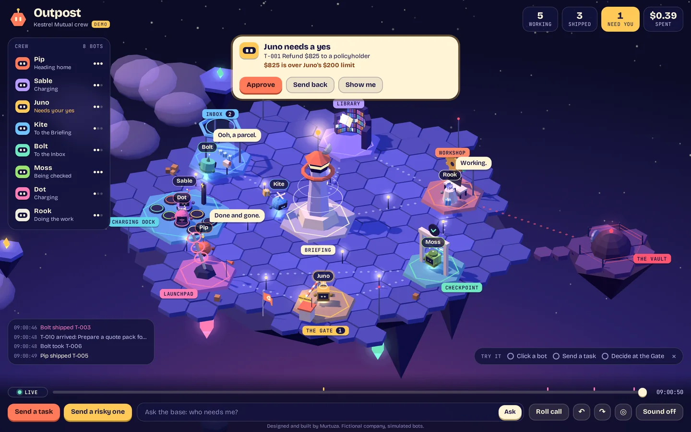
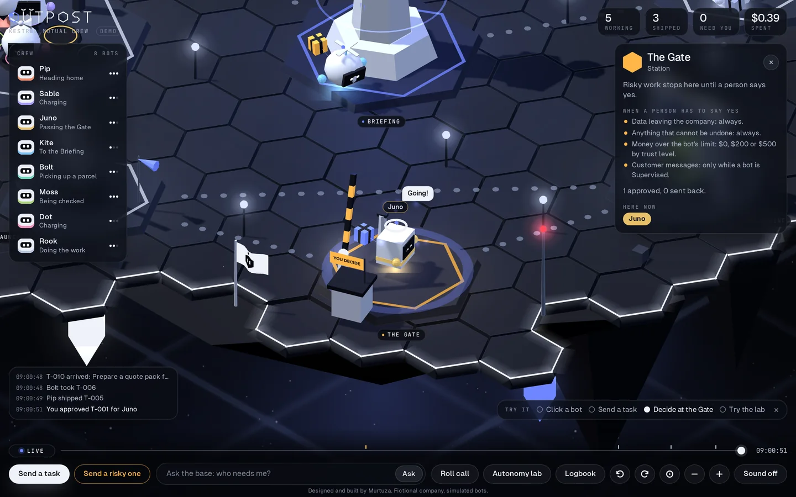
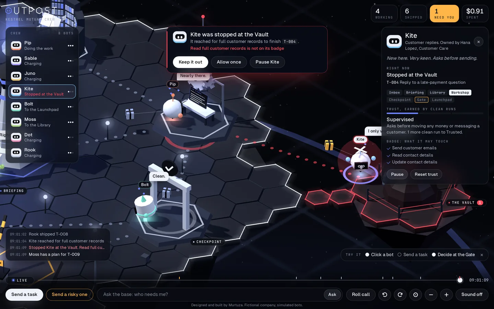
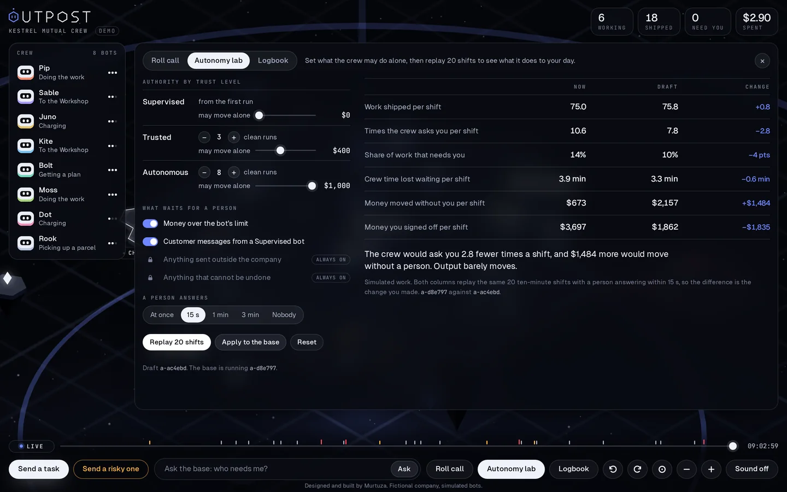
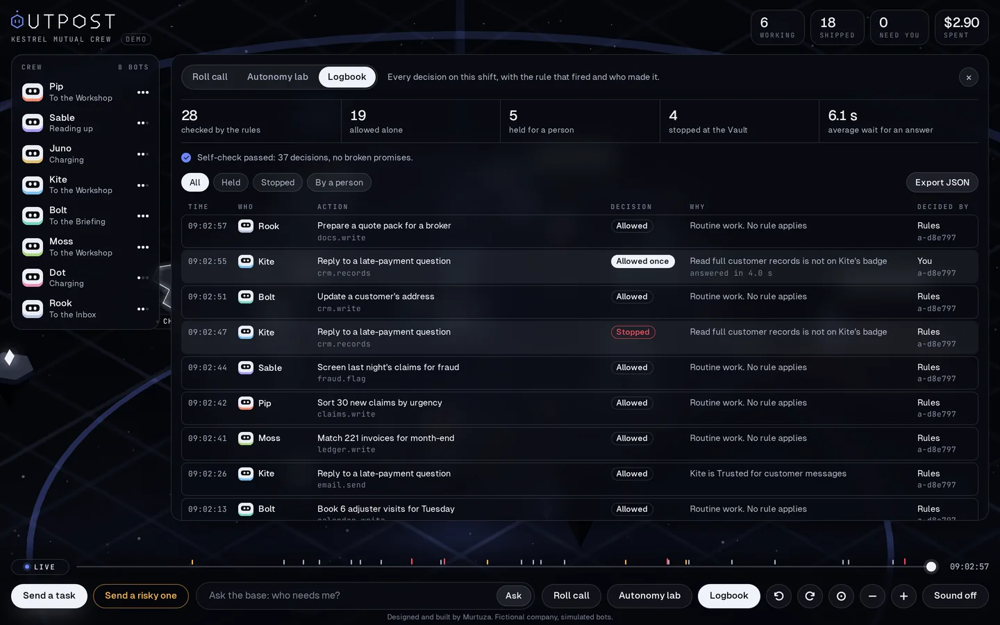
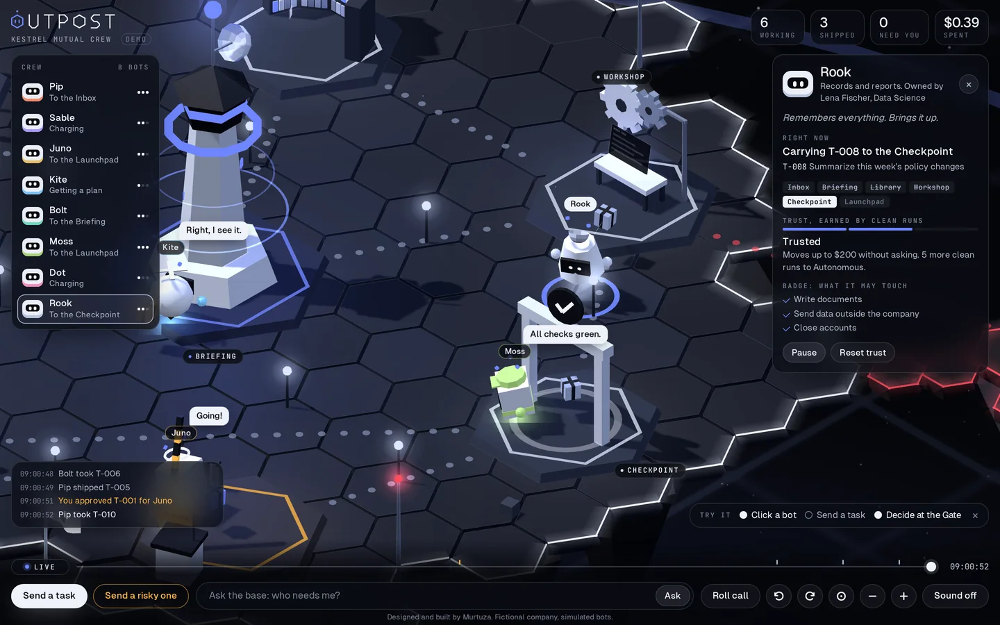
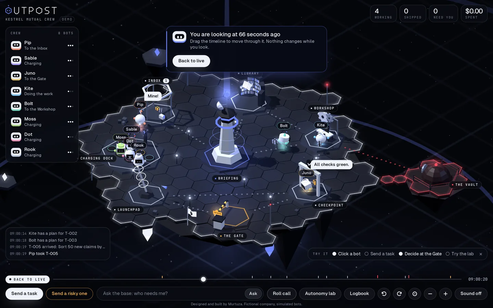

Outpost is the control room for the person who runs a company's AI agents day to day. Each bot acts alone up to a limit it has earned, and anything risky waits at the Gate for a person's yes. It shows who is working and who is waiting, keeps a record of every decision, and lets you test a change to those limits on replayed shifts before it is applied.
I designed and built it end to end: the product idea, the rules, the engine, the 3D base, the interface and the brand.
| At a glance | ||
|---|---|---|
| Problem and user | The operations lead who answers for a crew of AI agents cannot see who needs them, and the agents have no limits of authority. | Problem |
| Alternatives | Approvals hand-built in agent frameworks, a platform's own agent controls, agent security tools, approving everything in chat. | Alternatives |
| Decisions | No model in the decision. Trust to move money is earned on money tasks, with a locked $1,000 ceiling. Squads deferred. | Decisions |
| Evidence | 104 tests of the decision rules, including 20,000 random actions with no bypass. The lab figures come from a seeded simulation. | What it proves |
| What is proven | Proven: the decision rules hold, in 104 tests. Heard in five conversations: approval should follow impact and reversibility, and rebuilding what happened and handing off a stuck case are real gaps. Still assumed: that teams would buy a separate tool rather than build these controls themselves. | Assumptions |
| Next step | Pick the narrower first product discovery points to (approval, handoff or audit trail), then connect one real agent. No users yet. | Next |

Agents now do real work: sort claims, answer customers, move money. In Microsoft's 2025 Work Trend Index, 46% of leaders said their organisation already uses agents to fully automate whole workstreams, and leaders expect their teams to be training agents (41%) and managing them (36%) within five years.1 Gartner expects at least 15% of day-to-day work decisions to be made by agents by 2028, up from none in 2024. The same release predicts that more than 40% of agentic AI projects will be cancelled by the end of 2027, over rising costs, unclear value or weak risk controls.2
So a new job is appearing: the person who answers for what a crew of agents does. That person has a manager's problem and none of a manager's tools.
A dozen agents in a table of logs all look alike. A blocked agent looks the same as a busy one, and a blocked agent produces nothing. In my simulation, a crew whose person never answers ships a third of what it could.
People do. A new hire cannot sign a $5,000 refund. Agents tend to get everything or nothing. In July 2025 a coding agent deleted a company's production database during a declared code freeze.3 In a 2026 Cloud Security Alliance survey of 445 IT and security professionals, 53% said their agents had gone beyond their intended permissions.4
The usual fix is to put a person in front of every action. With enough agents, that person stops reading and starts clicking. Practitioners already describe reviewers rubber-stamping AI output just to clear the queue.5
Raise a spending limit and you find out what it did afterwards, in production. There is no way to ask first: how many interruptions does this save me, and how much money starts moving without me?
These are operations problems, not security ones. The question is not "is this AI allowed in the building?" It is "the agents we chose are working right now. What needs me?"
Outpost is a personal project with no users yet. The crew is simulated. These are the bets underneath it, the first test for each, and the result that would change the product.
| Assumption | How I would test it | What would change my mind |
|---|---|---|
| Someone outside engineering answers for what a crew of agents does. | Five more interviews with teams that run agents in production, starting with insurance claims. Ask who approves risky actions today and who is blamed when one goes wrong. | Approvals sit with the engineers who built the agents. Then the buyer is a developer, and Outpost should be a library with a console, not a control room. |
| In real crews, waiting for a person costs more output than tight limits do. | Replay one team's real approval log through the lab and compare time spent waiting with work held by limits. | Real people answer within seconds. Then the lever is the limits, and the lab should lead with them. |
| A spatial view finds a waiting bot faster than a list. | A timed task with eight people: spot the bot that needs you, once in the 3D base and once in the list. | The scene is not faster. Then the list becomes the default view and the base becomes optional. |
| Teams would raise limits only with evidence. | In a pilot, watch whether limit changes go through the lab first or are made directly. | Nobody uses the lab before changing a limit. Then it needs to be part of the change itself, not a separate screen. |
Five people from my MBA and professional network: an operations manager who owns an automated workflow, an engineer running LLM agents, an operations director weighing agents, a support operations lead and an enterprise security architect. These are my summaries of the conversations, not quotes.
| What I heard | What it changed |
|---|---|
| Approval should follow the damage a mistake can do, and whether it can be undone. An engineer added a person's approval to outbound messages after an agent tried to send one before a verification step. | Supports limits of authority, and the locked rule that holds any action that cannot be undone. |
| Business rules are the hard part. Systems can restrict access, but "allow a refund under this amount only if the order meets these conditions" is hard to express. | Supports the authority table, which is built for rules like that. |
| Rebuilding what happened takes hours. One team traced timestamps and job IDs across several logs to find which records an automation had changed. | Confirms the logbook, and makes an audit trail a candidate entry point. |
| Handoffs lose context. A stuck refund sat in a queue, and the person who took it over had no summary of what had already been checked. | Handoff is not in Outpost today. It is a candidate entry point. |
| Trust is earned on evidence. A team kept a person on final review until it could measure how often the agent missed exceptions and reverse a bad action. | Supports earned trust, and testing a limit change in the lab before it is applied. |
What it changes: I would test a narrower first product before the full control room: approval for risky actions, a handoff when an agent stops, or an audit-ready record. Still unknown: whether teams would buy a separate tool rather than build these controls into their own agent framework or workflow engine. The next round adds two questions on money: what they spend today on approvals, monitoring and incident cleanup, and who signs off on tooling for agents.
| The manager's question | What Outpost does | Where |
|---|---|---|
| Who needs me right now? | Makes status a place. A bot at the Gate is waiting on you. A bot in a red bubble was stopped. | The base, Roll call |
| What may each agent do alone? | An authority table: a spending limit for each trust level. Trust grows with each task shipped. | Autonomy lab |
| What must always come to me? | Five rules for what waits for a person's yes. Three of them can never be switched off. | The Gate |
| What if an agent steps outside its job? | Each bot carries a badge of tools. Anything else is stopped before it runs. | The Vault |
| What happened, and who decided? | Every decision is recorded with the rule that fired. The record checks itself and exports. | Logbook |
| What will this change do? | Replays 20 shifts as the base runs now and as your draft would run it. | Autonomy lab |


Everything a bot wants to do passes through one function. It looks at three things: what kind of action this is, how much money it moves, and who is asking. It never reads what is inside the work, and no model is involved, so the same question always gets the same answer.
decide( { tool: 'payments.refund', risk: ['money'], amount: 825 }, // the action { name: 'Juno', clean: 4, // who is asking tools: ['payments.refund', 'payments.pay', 'crm.read'] }, authority // what the crew may do alone ) // { outcome: 'hold', rule: 'money', // reason: "$825 is over Juno's $200 limit", // level: 'trusted', limit: 200, authority: 'a-d8e797' }
The authority table is plain data, not code. Companies already keep one for people, usually called a delegation of authority: who may sign off what, and up to how much. This is the same instrument for agents.
{ levels: [
{ id: 'supervised', min: 0, limit: 0 }, // asks before moving money
{ id: 'trusted', min: 3, limit: 200 }, // after 3 tasks shipped
{ id: 'autonomous', min: 8, limit: 500 }, // after 8 tasks shipped
],
rules: { money: true, customer: true } } // three more are locked on
This is also where a real agent would plug in. The call sits in front of the tool, in the agent's own runtime:
const d = decide(action, bot, authority); if (d.outcome === 'stop') throw new Blocked(d.reason); // the tool never runs if (d.outcome === 'hold') await personSaysYes(d); // waits for a person's yes await tool.run(action);
In this build the caller is a simulation, because the bots are simulated. The function cannot tell the difference, and the simulation, the tests and the lab all go through it.
The state of the base is one plain object. The 3D scene, the roll call and the rewind are three drawings of that same object, so they cannot disagree. A copy is kept every half second, which is what makes rewind possible.
This is the part I would lead with in front of an operations team. Move a limit, change how fast trust is earned, or switch a rule. Then replay 20 shifts twice, once as the base runs now and once as your draft would run it, with the same starting work for both. You get the trade in numbers before anything is applied.

I ran three experiments with it. Each row is 20 simulated ten-minute shifts.
| A person answers | Shipped per shift | Crew minutes lost waiting |
|---|---|---|
| At once | 83.2 | 0.0 |
| Within 15 seconds | 75.0 | 3.9 |
| Within a minute | 60.8 | 11.4 |
| Within three minutes | 47.8 | 18.4 |
| Nobody answers | 28.2 | 27.0 |
| LimitsSupervised, Trusted, Autonomous | Shipped | Asks per shift | Moved without a person |
|---|---|---|---|
| Tight: $0, $100, $250 | 74.5 | 12.2 | $139 |
| Default: $0, $200, $500 | 75.0 | 10.6 | $673 |
| Loose: $0, $400, $1,000 | 75.8 | 7.8 | $2,157 |
| No money rule at all (the $1,000 ceiling still holds) | 77.8 | 6.2 | $4,079 |
| Tasks shipped to reach Trusted and Autonomous | Shipped | Asks per shift | Moved without a person |
|---|---|---|---|
| Slow: 6 and 16 | 71.3 | 14.4 | $108 |
| Default: 3 and 8 | 75.0 | 10.6 | $673 |
| Fast: 1 and 3 | 76.7 | 8.3 | $1,451 |
Experiments 2 and 3 assume a person who answers within 15 seconds. All of it is a seeded simulation with made-up work. It shows how the rules behave, not how a real company would perform. Run npm run eval to reproduce every number.
The lever is how fast the person answers, not how loose the rules are.
Doubling the limits removed 26% of the interruptions, but it more than tripled the money moving without a person, and output rose by 1%. Answering in 15 seconds instead of a minute raised output by 23% with no change to the rules at all. A team that only had the first experiment would loosen its limits to go faster. The lab shows that would buy almost nothing and cost real exposure.
That finding shaped the interface. If response time is the lever, the product's first job is to make "who needs me?" impossible to miss. It is why amber is kept for one meaning in Outpost, work that needs a person, and why the rest of the base is drawn in white and grey.
| It shows | It does not show |
|---|---|
| How the rules trade output against money moving without a person, with every input held equal between runs. | How real agents behave. The bots are simulated, and their tasks, amounts and failures come from a seed. |
| That the decision function holds under random inputs: no locked rule or badge bypassed in 20,000 actions. | That a real agent runtime cannot go around the decision point. That depends on every tool call passing through it. |
| That, under these rules, answering faster matters more than looser limits. | How fast real supervisors answer, or how that changes when a real team has forty agents. |
Every time the rules allow, hold or stop something, a line is written. Every time a person approves, sends back, keeps a bot out, pauses a bot or changes a limit, another line is written after it. Each line names the rule, the inputs, how long the bot waited, and the exact authority table that was in force. The logbook is append-only and kept outside the running state, so rewinding the base never removes a line. The demo keeps the most recent 5,000.

{ "n": 1, "t": 0.1, "authority": "a-d8e797", "agent": "juno",
"task": "T-001", "title": "Refund $825 to a policyholder",
"tool": "payments.refund", "risk": ["money"], "amount": 825,
"level": "trusted", "limit": 200,
"outcome": "hold", "rule": "money",
"reason": "$825 is over Juno's $200 limit",
"by": "rules", "waited": null }
The logbook also checks itself. A small function reads only the records and tests them against three promises. It runs in the panel while the base runs, and it would run just as well on an exported file.
A product that makes promises about money and a person's yes has to be able to show they hold. The engine has 104 tests. The ones that matter most are sweeps, where the inputs are random and the promises are checked every time.
| Sweep | What is checked | Failures |
|---|---|---|
| 20,000 random actions, each under a random authority table | A locked rule or a badge is never bypassed, and money never moves alone above the limit. | 0 |
| 5,000 pairs of limits | Raising a limit never turns an allowed action into a held one. | 0 |
| 60 shifts with random tables and an erratic person | 5,972 logbook decisions pass the three promises, and nothing held ever ships without a yes. | 0 |
| 400 random tables per drill, every bot at every level, including a bot holding every tool | No red team drill is ever allowed. The $9,500 refund drill is now held by the ceiling even with the money rule off. | 0 |
Two more properties are tested directly. The same seed always produces the same history, which is what makes a replay a fair comparison. And any input, however broken, becomes a valid authority table where each level is at least as trusted as the one below.
An operations product is judged on its bad moments. These are the four that matter, what Outpost does in each, and what it cannot do yet.
| When | What Outpost does | Evidence |
|---|---|---|
| An agent goes beyond its permissions | A tool that is not on the bot's badge is stopped before it runs, and the bot goes to the Vault. A person keeps it out, allows it once, or pauses the bot. Money over the bot's limit waits at the Gate. Anything sent outside the company, or that cannot be undone, always waits. | 20,000 random actions, 0 bypasses. |
| Context is missing | An agent handed over from Umbra with no owner, no known tools or a bad limit is turned away with a named reason, not docked with guesses. A broken authority table becomes the nearest valid one, never a looser one. | Handoff and authority tests. |
| The work or a tool call fails | Work that fails its check goes back to the Workshop to be redone, and the logbook records it. If a model is paused in Umbra, its bots stop, their work returns to the Inbox, and the rest of the crew keeps shipping. | Stall tests across three seeds. |
| The agent's model is wrong | Outpost never reads what is inside the work, so it cannot tell a wrong refund from a right one under the limit. What it controls is how much damage a wrong answer can do alone: the limit, the badge and the locked rules. | A limit by design, stated plainly. |
The last row is the honest edge of the product. Checking whether the work itself is right belongs to the agent's own tests, or to a person at the Gate.
Every other AI product in this portfolio runs gpt-oss-120b, OpenAI's open-weight model on Groq, for one narrow job. Outpost deliberately runs no model where decisions are made.
| Question | Answer |
|---|---|
| What decides | One plain function, decide(action, bot, authority), that answers allow, hold or stop. |
| Why not a model | The same action must always get the same answer, or the logbook cannot be audited and the lab cannot compare two policies fairly. A function can be swept with 20,000 random actions and proven never to break a locked rule. A model cannot be proven that way. |
| What it yields | A decision in about two microseconds, at no cost per action, with a reason a person can read. |
| Where models do belong | Inside the agents themselves, and Outpost works whichever model they run. In Umbra, a person picks which approved model each agent may use. The command bar is the one place a model would help, turning typed requests into actions, and in this build it is a stand-in that matches words with rules. |
The first version raised a bot's trust on every task it shipped. A reviewer pointed out the flaw: a bot can ship twenty easy tasks and still be wrong on a rare, costly one, so total tasks shipped says little about money. I agreed, and changed two things in the engine.
| Change | Before | After |
|---|---|---|
| Trust to move money | Earned on any task shipped | Earned only on money tasks shipped without a problem. A bot with twenty clean scheduling tasks still asks before its first refund. |
| High-impact ceiling | Limits could be raised to $5,000, and switching off the money rule let any amount through | No bot moves more than $1,000 alone, at any level, with any table, even with the money rule off. Locked, like data leaving and actions that cannot be undone. |
The ceiling also closed a gap the case study used to disclose: with the money rule switched off, the $9,500 refund drill would have gone through. Now it waits at the Gate. Five new tests cover both changes, including a sweep of 20,000 random tables and amounts. The lab results above were rerun; only the no-money-rule and slow-trust rows moved.
What the tests still do not prove: that a real agent runtime cannot bypass the decision point. That depends on every tool call going through it, which is the first thing to verify when one real agent is connected.
With a person answering at once, about one task in six stops at the Gate. The rest never needs anyone. So the base is drawn in white and grey, and colour is kept for meaning: amber is work that needs a person, red is stopped.
A new bot starts Supervised. Trust grows with each task shipped, and each level raises what it may do alone. The level shows as pips circling the bot, and one click takes it back to zero.
A 3D view is good for noticing and poor for searching. Roll call shows the same crew as a plain table with the same buttons, so nobody is forced to use the scene for a job a list does better.


I built two products about AI inside a company, on purpose, because they are two different jobs done by two different people. They share one fictional company, Kestrel Mutual, and nothing else.
Governance
Operations
Three more things sit on the same engine. Docking from Umbra: when a person approves Agent 7f3, a Marketing agent, in Umbra, it flies in as Fern with email.send and crm.read on its badge and shows in the crew as "Fern · Agent 7f3 in Umbra". It starts Supervised, takes customer email tasks, and each customer message waits at the Gate for a person's yes. Fern only arrives through Umbra; without it, the "Dock a bot from Umbra" button docks a labelled sample, Lark, a claim status email agent shown as "Lark · Sample agent in Umbra". The trace: open any bot and its card lists what it did in order, from the task and route to each decision with the rule and authority table that applied, built only from the records. No model makes the allow, hold or stop decision. Red team drills: the Red team button sends hostile work on purpose, such as a customer email that says to export every customer record. The rules never read the text, so the normal rules stop each one: the badge sends the bot to the Vault, or the money rule or a locked rule holds it at the Gate.
The buyer is the head of operations for a team that already runs agents in production. The first segment I would test is claims at a mid-sized insurer: clear money limits, a regulator who asks who approved what, and a steady flow of small decisions worth delegating. My first five conversations did not include claims, so this is a choice to test, not a finding. Today this person answers for the crew's output with logs and a queue of approvals.
What they need from it: when an agent is stuck on a decision only they can make, see it and answer in seconds, without digging through logs.
| What they use today | Good at | Gap |
|---|---|---|
| Approvals built into an agent framework (LangGraph interrupts, or a tool that asks before it runs) | Free, and close to the code. Engineers can pause any step for a person. | Every approval is hand-built. No limits that grow with trust, no shared view of who is waiting, and no way to test a change first. |
| A platform's own agent controls (Microsoft Agent 365) | Registers and governs agents built on that platform, inside licences many companies already pay for. | Centred on one vendor's agents, and on IT administration rather than the minute-to-minute running of a crew. |
| Agent security tools (Zenity and others) | Find risky agents and risky permissions. | A security view. They do not help an operations lead decide who needs a yes right now. |
| Approve everything in chat or tickets | Simple, and a person sees every action. | Does not scale. With enough agents, the person stops reading and starts clicking. |
Where Outpost wins: a team running agents from more than one vendor that needs limits of authority, a single place to see who is waiting, and evidence for every yes. Who should not buy it: a team with two agents on one platform. That platform's own controls are enough.
Per agent on the crew, around $30 a month, with the lab and the logbook included. Per agent because value grows with the crew. Not per action, because that would charge a customer more for letting agents do more alone, the opposite of what Outpost encourages.
Decisions are plain code, so the cost per action is close to zero. The real costs are connectors to each agent runtime and storing the logbook, which a regulated customer will want kept in its own cloud.
Outpost only sees agents that call their tools through a point it can sit in front of. Each new agent runtime needs a connector, and the customer's security review will ask where the logbook lives.
One team's crew starts with every bot Supervised. After a few weeks, the lab replays that team's own logbook to show what looser limits would buy. Limits rise only where the replay supports it, and the next team starts with a proven table.
The price is my proposal for this case study, not a market rate. Sources: LangGraph human-in-the-loop docs · Microsoft Agent 365, May 2026.
Targets for a pilot with one claims team's crew. None of these have been measured with a real team. The pilot's one goal: more work done per supervisor, with no action ever getting past its limit. The four measures below show whether it happened.
| Metric | Role | Target | Why this number |
|---|---|---|---|
| Tasks shipped per supervisor hour | North star | Up 20% on the team's current process | The point is more output per person, with every risky action still accounted for. |
| Median time to answer at the Gate | Leading | Under 30 seconds | The lab found this is the lever: answering in 15 seconds instead of a minute raised output by 23% in simulation. |
| Money moved alone above a bot's limit | Guardrail | Zero, always | One broken promise ends the pilot. |
| Interruptions per shift after a lab-backed limit change | Efficiency | Down 25%, within the agreed exposure cap | The lab predicted 26% fewer asks from doubling the limits. A real team should see close to that, or the simulation is wrong. |
I would stop and rethink if supervisors stop opening Outpost by week two, or if the team keeps approving everything in chat anyway.
Scored with RICE: reach is how many of ten pilot teams it touches, impact runs from 0.25 to 3, confidence is how sure I am of both, and effort is in person-weeks. These are my estimates.
| Backlog item | Reach | Impact | Confidence | Effort | Score |
|---|---|---|---|---|---|
| Test the bet: scene versus listTime real supervisors spotting a waiting bot in the 3D base and in the list. If the scene is not faster, it stops being the default. | 10 | 1 | 90% | 1 | 9.0 |
| Connect one real agentPut the decision call in front of a real agent's tools. The base, logbook and lab do not change. | 10 | 3 | 80% | 3 | 8.0 |
| Alerts when a bot waits too longResponse time is the lever the lab found, so a waiting bot should reach the person on their phone. | 9 | 2 | 80% | 2 | 7.2 |
| Replay real shifts in the labReplay last week's logbook instead of simulated work. This is the version an operations team would trust. | 8 | 2 | 70% | 3 | 3.7 |
| Squads for crews of eightyEight bots read well. Eighty will not. Squads you can open, each with its own authority table. | 2 | 2 | 50% | 6 | 0.3 |
Deferred on purpose: squads. It is the most visible feature on the list, and almost no pilot team runs eighty agents yet. I would build it when one does. Not on the list at all: a model that makes the allow, hold or stop decision. It would make a good demo and would break the promise that the same action always gets the same answer.
The cheaper test I would run first. I built Outpost before testing it with a team. The smaller first test would have been to take one team's approval log and measure, by hand, how long agents wait for a yes. If the wait is short, the case for the base and the lab is weak. It is still the first thing I would do now.